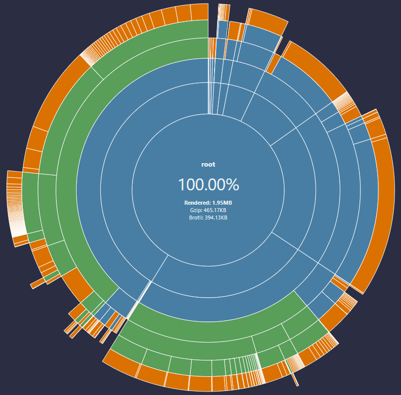

🖥️frontend GUI Vue3
已完成項目清單
More...
項目
說明
整併 rollup-plugin-visualizer 套件
起因： Vite 警告通知
可監控套件大小，適時調整程式，避免 ui 操作效能變差
Vite警告通知，一個 chunk 超過 500 kb 就會有效能疑慮，建議分拆成數個 components
有多種圖表，擇一

分佈圖
切分頁面
可搭配 Hot Key 切換，ctrl+1、ctrl+2、ctrl+3、ctrl+4、Esc
登入 / 登出
CI/CD Runner
Account
IPC cmd (功能已做好，但要從 CI/CD 整合抽離出來)
Params Edit